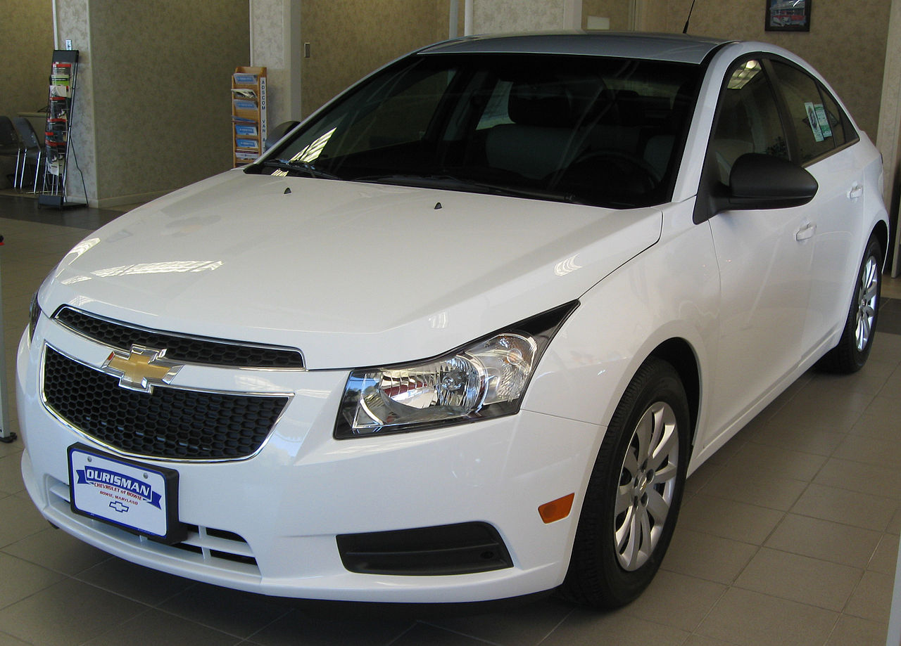

Taller Mecanico Rayo Makween
Inicio
Galeria
Formulario
Quienes Somos

chevrolet cruze 2010 beyaz
Detalles
Mecanico : Jorge Lopez
Fecha Ingreso : 13 / 02 / 2021
Fecha Retiro : 13 / 02 / 2021
Materiales : Focos de luces delanteras
Diagnostico : Funcionamiento optimo de los nuevos focos y luces de direcciones